C# OpenGL grensesnitt
for Windows operativsystem
Colin Fahey
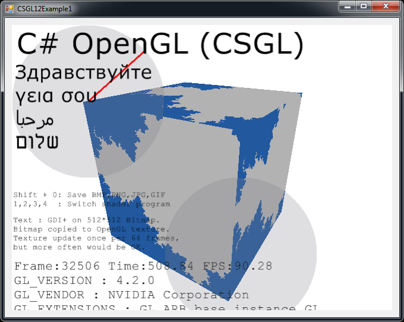
CSGL12Control på en Form, viser en "fraktal" pixel shader programmet og GDI+ tegning kopiert til en tekstur
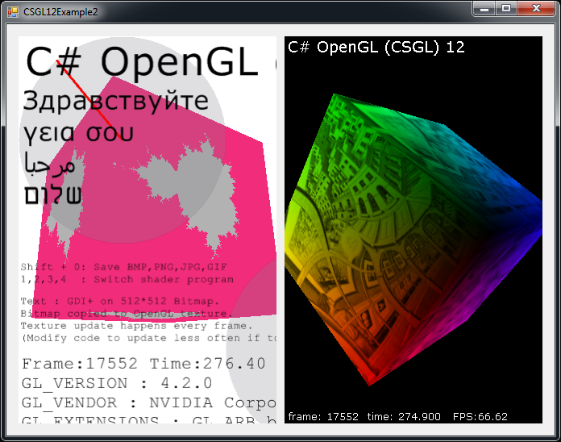
To CSGL12Control forekomster på et Form viser pixel shader programmer og teksturer
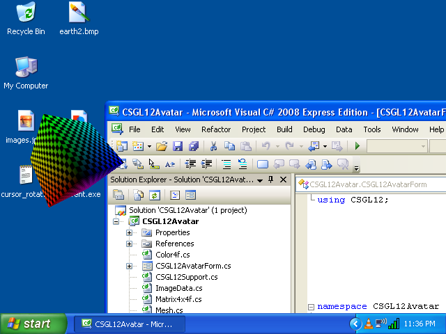
En 3D avatar som roams skrivebordet og kan flyttes med markøren
1. Programvare
Denne versjonen av dette dokumentet bør bare følger med "CSGL12" programvare. Hvis du ikke finner programvaren, kan du gå til følgende webområde for å laste ned programvaren:
http://colinfahey.com.
2. Alle de C# datamaskinkode i C# OpenGL grensesnitt (CSGL12) er "offentlig tilgjengelig"
Jeg skrev alle de C# datamaskinkode innenfor C# OpenGL grensesnitt (CSGL12).
Jeg erklærer alle de C# datamaskinkode innenfor C# OpenGL grensesnitt (CSGL12) skal i den "offentlige sfæren."
Derfor datamaskinen koden kan brukes til noe formål (kommersielle eller private), uten betaling, uten restriksjoner, uten forpliktelser, og uten å anerkjenne den opprinnelige forfatteren.
Koden kan endres eller deler gjenbruk, uten begrensninger, og uten forpliktelser, og uten å anerkjenne den opprinnelige forfatteren.
Eksempelet programmer inkluderer en liten datamaskin koden (spesielt "shader datamaskin code) skrevet av andre personer." Slike er ikke i grensesnittet i seg selv og kan trivially fjernet. Slikt er bare for å demonstrere enkelt bruker grensesnitt til å opprette og bruke "shader" programmer.
3. Innledning
"CSGL12" er en samling av C# datamaskinkode filer som implementerer et grensesnitt til OpenGL grafikk biblioteket (inkludert alle utvidelser av OpenGL fram til år 2007) for Windows operativsystemet.
Den C# datamaskinkode filer i "CSGL12" samling gjør det enkelt å legge OpenGL tegning til en C# / .NET programvare med en "Form" (en forekomst av "System.Windows.Forms.Form").
Den "CSGL12" samling datamaskinkode filer inneholder en fil kalt "CSGL12Control.cs", som definerer en klasse kalt "CSGL12Control", avledet fra "System.Windows.Forms.Control". Hver forekomst av "CSGL12Control" representerer en uavhengig OpenGL tegning området. Det er veldig enkelt å legge til flere forekomster av CSGL12Control til en Form (en forekomst av System.Windows.Forms.Form).
4. Egenskaper og krav "CSGL12"
Koden er bare for Windows operativsystemer som støtter .NET 2.0 Framework (Windows 2000, Windows XP, Windows Vista, Windows 7)
Koden kan være sammensatt ved hjelp "Microsoft Visual C# 2008 Express Edition" (gratis kompilator) eller lignende C# kompilatorene.
Koden må bygges med "[X] Allow unsafe code" bygge alternativet velges, slik at optimalisert bilde data kopiering funksjoner kan brukes. Hvis du er en ekspert C# programmerer vil du kunne lett identifisere de delene av C# koden som krever "unsafe" og deaktivere dem hvis det er ønskelig eller nødvendig. Image data kopiering er 10 ganger raskere hjelp "unsafe" kode enn alternativ, og dette er grunnen til at slik kode blir brukt. Hvis du bygger en DLL som inneholder alle de "unsafe" koden, deretter et prosjekt som bruker slik DLL krever ikke bygges med "unsafe" alternativet, og så kan du antyde at fravær av "unsafe" alternativet i et prosjekt innebærer ikke noe ekstra sikkerhet (fordi mange DLL filer som brukes implisitt eller eksplisitt av programmet inneholder "usikre" code).
Koden kan være sammensatt og brukes av noen av følgende:
Microsoft Visual C# 2008 Express Edition
Microsoft Visual Studio 2008
Microsoft .NET 3.5 SDK
SharpDevelop
Mono Project
Koden gir mest OpenGL utvidelser (gjennom året 2007), inkludert "vertex shaders" og "pixel shaders".
Koden gir 1570 funksjoner knyttet til OpenGL:
336 GL functions
51 GLU functions
19 WGL functions
1164 extensions
Koden tilbyr noen alternative varianter av 1570 funksjoner med ulike parameter typer, for brukervennlighet.
Koden definerer mer enn 3244 konstantene for OpenGL.
Koden gjør det mulig å ha flere OpenGL tegning sammenhenger, alle animert uavhengig på alle "Form".
Klikke på et "CSGL12Control" gir "innspill fokus," slik at etterfølgende tastatur og musehjulet inngang. Markør klikk og bevegelser mottas når markøren er innenfor den rektangulære området av en forekomst av "CSGL12Control".
Koden inneholder funksjoner for å demonstrere hvordan du gjør noen vanlige OpenGL oppgaver i C# og .NET.
Koden viser alle OpenGL konstantene og funksjonene i alfabetisk rekkefølge i "class GL" i "GL.cs" og gjør det enkelt å fastslå om noen konstant eller funksjon mangler (som er lite sannsynlig, med unntak for utvidelser vedtatt etter år 2007).
Eksempelet programmer viser hvordan du gjør GDI+ tegning til en Bitmap, og deretter hvordan du kopierer at Bitmap en OpenGL tekstur.
Dette gjør at tekst og andre GDI+ tegning evner til å bidra til en OpenGL scenen.
Den GDI+ Bitmap kan bli oppdatert og lastet opp til en OpenGL texture så ofte som én gang per OpenGL rammen.
Eksempelet programmer viser hvordan du kan velge blant flere ulike "pixel shader programs" mens programmet kjører.
Eksempelet programmer viser hvordan du skriver OpenGL buffere til bildefiler (JPG, BMP, GIF, PNG).
Trykk Shift + 0 (Shift-null) til å skrive den OpenGL buffer til bildefiler.
Eksempelet koden viser hvordan kompilere "GL.cs" på en DLL filen, og deretter legger til at DLL filen til et annet prosjekt, kan hindre Microsoft koden editorer (f.eks Microsoft Visual C# 2008 Express Edition osv.) med "IntelliSense" (kontekst-sensitive koden ferdigstillelse) fra å bli hyppig og vedvarende reagere (gjentatte pause i mange sekunder, noe som gjør redigereren helt ubrukelig). Har filen "GL.cs" direkte inkludert i noen prosjekter blir redigert av en Microsoft koden redaktør er ikke praktisk, med mindre en person er villig til å tåle den langsomheten av redaktøren. Dette problemet har påvirket Microsoft Visual Studio 2003, 2005, 2008, og vil sannsynligvis påvirke 2010 versjon også.
Eksempelet koden viser bruk av flere forekomster av "CSGL12Control" på et "Form".
Eksempelet koden inneholder koden for å gjøre en 3D "avatar" som roams skrivebordet til Windows.
5. Eksempel programmene som følger med "CSGL12"
5.1 "CSGL12DLL"
Prosjektet heter "CSGL12DLL" produserer en DLL fil kalt "CSGL12DLL.dll" som inneholder "class GL" (definert i C# fil "GL.cs").
Putting "class GL" på en DLL filen, og deretter bruker den DLL i andre prosjekter som bruker "class GL", bidrar unngå en ekstrem problem med alle Microsoft koden redaktører med IntelliSense funksjonen. Bruke C# fil GL.cs direkte i et prosjekt som kan føre til noen Microsoft code editor med IntelliSense funksjonen til å bli helt reagere og ubrukelig nesten kontinuerlig skyldes ineffektiviteten i IntelliSense funksjonen (og det faktum at IntelliSense tydeligvis blokker hoveddisplayet programmet tråd redaktøren ).
Hvis du bruker en C# kode editor som ikke er produsert av Microsoft (f.eks "SharpDevelop", "MonoDevelop", osv.), så kan du bare inkludere filen "GL.cs" direkte i prosjektene dine, og du ville være usannsynlig å oppnå fordeler i å bruke "CSGL12DLL.dll".
5.2 "CSGL12Control"
Prosjektet heter "CSGL12Control" produserer en DLL fil kalt "CSGL12Control.dll" som inneholder "class CSGL12Control" (definert i C# fil "CSGL12Control.cs").
Putting "class CSGL12Control" på en DLL fil, gjør at "Control" (dvs. en klasse avledet fra "System.Windows.Forms.Control") skal legges til "Toolbox" av Microsoft Visual C# 2008 Express Edition (og lignende C# redaktører). Har "CSGL12Control" i "Toolbox" gjør det enkelt for en person til å legge til en forekomst av "CSGL12Control" til en "Form" i "Designer" (for eksempel en person kan ganske enkelt bruke markøren for å velge og dra en forekomst av "CSGL12Control" fra "Toolbox" til en "Form").
Den "CSGL12Control" objekt styrer en OpenGL tegning sammenheng. Flere forekomster av "CSGL12Control" kan eksistere sammen på en "Form".
5.3 "CSGL12Example1"
Prosjektet heter "CSGL12Example1" produserer en kjørbare programfilen (EXE) oppkalt "CSGL12Example1.exe". Programmet bruker "CSGL12DLL.dll" og "CSGL12Control.dll" å vise en forekomst av CSGL12Control og tegne en kube bruker OpenGL.
Programmet viser bruk av fire ulike "pixel shaders" "(fraktal, stein, tre," og "tegneserie)."
Programmet også demonstrerer bruk av "GDI+", en .NET tegning biblioteket, å trekke tekst og andre former til en "Bitmap" objekt (en "GDI+" objekt), og deretter kopiere bildet fra at "Bitmap" en "texture" i OpenGL, derfor lar bildet trekkes ved "GDI+" skal vises i OpenGL tegning. Denne muligheten er svært nyttig fordi OpenGL mangler mange av de 2D tegning funksjoner som finnes i "GDI+" og lignende 2D tegning libaries.
5.4 "CSGL12Example2"
Prosjektet heter "CSGL12Example2" produserer en kjørbare programfilen (EXE) oppkalt "CSGL12Example2.exe". Programmet bruker "CSGL12DLL.dll" og "CSGL12Control.dll" å vise to forekomster av CSGL12Control, som hver får en kuben ved hjelp OpenGL.
Programmet har en "SplitContainer" "Control" på "Form". Hver av de to områder av "SplitContainer" inneholder en forekomst av CSGL12Control. Dermed vil en person kan justere plasseringen av delt mellom de to forekomster av CSGL12Control. Dette demonstrerer fleksibilitet av CSGL12Control.
En av forekomster av CSGL12Control sender hendelser til et sett av hendelsen handlers i en forekomst av "CSGL12Example2Handler1.cs", som bruker den samme koden som "CSGL12Example1Handler.cs" i "CSGL12Example1" eksempel prosjektet. Derfor er en av forekomster CSGL12Control trekker en kube med en valgt "pixel shader" blant fire tilgjengelige "pixel shaders".
Det andre tilfellet av CSGL12Control sender hendelser til et sett av hendelsen handlers i en forekomst av "CSGL12Example2Handler2.cs", som trekker en kuben ved hjelp av en tekstur bilde (eller en "dambrett" mønster hvis en bildefil med navnet "image.jpg" er ikke funnet).
5.5 "CSGL12Avatar"
Prosjektet heter "CSGL12Avatar" produserer en kjørbare programfilen (EXE) oppkalt "CSGL12Avatar.exe". Programmet bruker "CSGL12DLL.dll" og "CSGL12Control.dll" å tegne en kube bruker OpenGL på "Form" uten ramme, med farge basert åpenhet aktivert, for å tegne et 3D "avatar" som roams den Windows stasjonære området.
Flyttingen avatar kan klikkes og flyttes til et nytt sted å bruke markøren. Dobbeltklikke avatar gjør det forsvinner. Selv om koden bare trekker en kube, OpenGL kan brukes til å trekke andre ting.
Flere forekomster av "avatar" programmet kan startes. Dermed mange uavhengige "avatar" tilfeller kan samtidig streife omkring det Windows skrivebordet. Dette er morsomt. En ekspert C# programmerer kan nyte finne måter å koordinere aktiviteten av mange slike "avatar" tilfeller.
Dessverre hastigheten som den Window objekt med åpenhet er oppdatert på skjermen er mye tregere enn hastigheten som OpenGL kan tegne. "Avatar" bare oppdateres 10 ganger per sekund. Jeg vet ikke om dette kan forbedres.
5.6 "CSGL12BuiltExecutableExamplesForReference"
Katalogen heter "CSGL12BuiltExecutableExamplesForReference" inneholder DLL filer og EXE filer produsert av alle de eksempel prosjekter. Disse filene er gitt som en referanse, slik at filene kan bli testet umiddelbart, selv om en person ikke har evne til å samle de forskjellige prosjektene fra forutsatt C# kode.
5.7 "CSGL12UsefulCode"
Katalogen heter "CSGL12UsefulCode" inneholder C# filer som kan være nyttig for folk som ønsker å gjøre vanlig tegning operasjoner med OpenGL. Katalogen inneholder også DLL filer "CSGL12DLL.dll" og "CSGL12Control.dll" for bekvemmelighet.
Koden i den katalogen definerer ulike class, for eksempel Color4f, Vector3f, Matrix4x4f, Triangle, Mesh, ImageData, Texture, ShaderProgram, etc. Koden er rimelig og effektiv, men den er bare ment å inspirere folk til å utvikle sine egne implementasjoner.
6. CSGL12 filer
Den "CSGL12" samling C# datamaskinkode filer inneholder filene vises i følgende diagram:
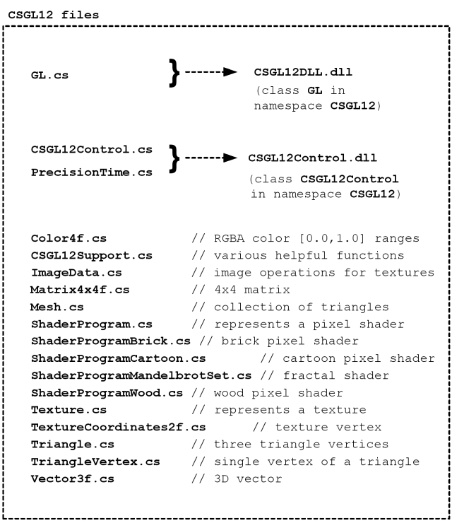
Den "CSGL12" samling C# datamaskinkode filer inneholder filene vises i denne figuren.
Den "CSGL12" programvare omfatter også prosjekter for å opprette to DLL filer ("CSGL12DLL.dll" og "CSGL12Control.dll") vist i figuren. De to DLL filer kan opprettes for å gjøre det enklere å lage programmer som bruker OpenGL, men det er også mulig å lage programmer som benytter bare C# filer direkte.
7. "namespace CSGL12" og "class" typer
Den "CSGL12" samling C# datamaskinkode filer definerer "namespace CSGL12" og "class" typene vist i følgende diagram:
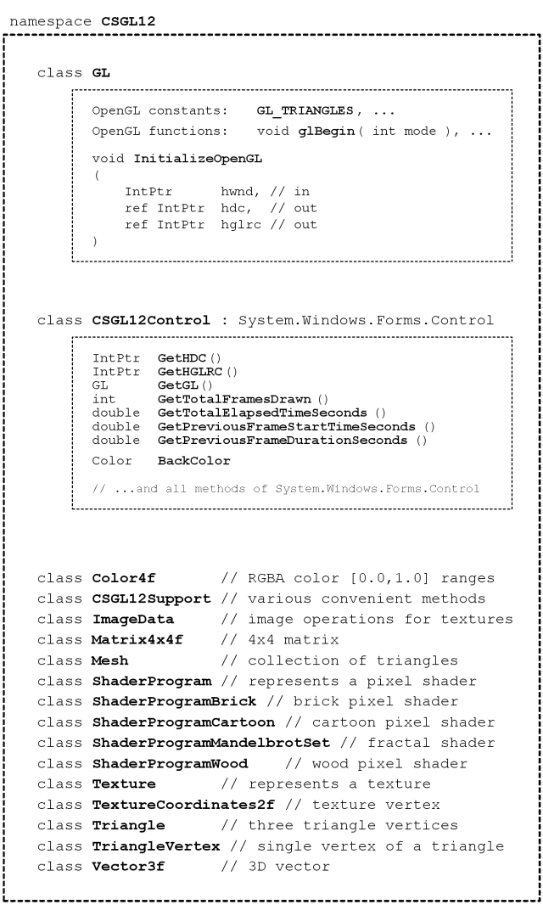
Den "CSGL12" samlingen av C# datamaskinkode filer definerer "namespace CSGL12" og "class" typene vist i denne figuren.
Et program som gjør OpenGL tegningen kan opprettes ved å bruke bare "class GL" (med C# fil GL.cs direkte, eller med DLL fil CSGL12DLL.dll som også inneholder "class GL"). Imidlertid bruker "class CSGL12Control" (ved hjelp av C# fil CSGL12Control.cs direkte, eller med DLL fil CSGL12Control.dll som også inneholder "class CSGL12Control") gjør legger OpenGL tegning til en Form (System.Windows.Forms.Form) enkelt og lettvint.
Den C# klasser Color4f, CSGL12Support, ImageData, ..., i bunnen av diagram tilbys bare for bekvemmelighet. De klasser gjør det enklere å lage programmer som trekker bruker OpenGL. Men du har kanskje allerede klasser som utfører operasjoner i disse klassene, eller du kan velge å opprette tilsvarende klasser som utfører operasjoner annerledes eller mer effektivt. De klassene tilbys som eksempler på en bestemt kode design og gjennomføring.
8. Hjelp av en enkelt "CSGL12Control" på System.Windows.Forms.Form
8.1 Program struktur
Følgende diagram viser hvordan et program med en System.Windows.Forms.Form kan bruke en enkelt "CSGL12Control" å gjøre tegning med OpenGL. Diagrammet viser de ulike CSGL12 filer brukes til å bygge programmet.
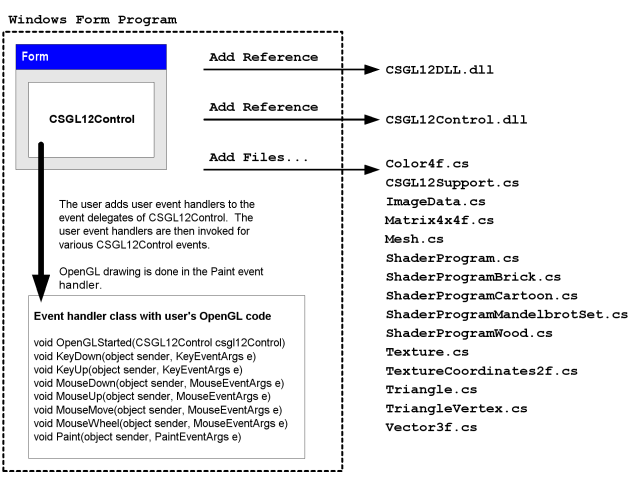
Et program som bruker en enkelt "CSGL12Control" på en System.Windows.Forms.Form
8.2 Bruke Microsoft Visual C# å lage programmet
(1) Start Microsoft Visual C#.
(2) I menyen velger "File" -> "New Project...".
(3) I "New Project" dialogboksen som vises, velger "Windows Forms Application" og velge et navn for programmet, og trykk "OK".
(4) Umiddelbart lagre "Solution" ved å velge "File" -> "Save All". En dialogboks med tittelen "Save Project" vises, slik at du kan sette prosjektet navn, katalogplassering, og "løsningen" for prosjektet. Husk katalogplassering slik at du er klar for neste instruksjon. Trykk "Save" knappen for å lagre prosjektet.
(5) Kopier alle filene fra katalogen "CSGL12UsefulCode" i "CSGL12" programvare til katalogen inneholder kildekodefiler av nytt prosjekt (dvs. katalogen som inneholder filene "Form1.cs", "Form1.Designer.cs", "Program.cs", osv.), slik at filene "CSGL12DLL.dll", "CSGL12Control.dll", "Color4f.cs" , "CSGL12Support.cs", osv., er sammen med det nye prosjektet filer "Form1.cs", etc.
(6) I Microsoft Visual C#, legger du til "CSGL12" C# filer til prosjektet. I menyen velger "Project" -> "Add Existing Item...", og i "Add Existing Item" dialogboksen velger du alle de C# filer fra CSGL12 programvare ("Color4f.cs", "CSGL12Support.cs", "ImageData.cs", ...).
(7) I Microsoft Visual C#, legger "referanser" til DLL filer "CSGL12DLL.dll" og "CSGL12Control.dll". I menyen velger "Project" -> "Add Reference...", og i "Add Reference" dialogboksen velger "Browse" kategorien, og velg filene "CSGL12DLL.dll" og "CSGL12Control.dll" fra prosjektet kildefilen katalogen, og trykk "OK".
(8) I Microsoft Visual C#, legger du til "CSGL12Control" til "Toolbox". I menyen velger "Tools" -> "Choose Toolbox Items...". I "Choose Toolbox Items" dialogboksen som vises, trykker du på "Browse..." knappen, og gå til prosjektet katalog med kildekodefiler og velger "CSGL12Control.dll". Trykk "OK" knappen.
(9) I Microsoft Visual C# vise "Toolbox". I menyen velger "View" -> "Toolbox". I "Toolbox", gå til den delen som heter "General" og finne elementet heter "CSGL12Control". Bruke markøren klikker elementet heter "CSGL12Control" og dra den til "Form" i "Design" visning.
(10) I Microsoft Visual C# i "Form" "Design" vise, flytte "CSGL12Control" eksempel på "Form" og justere bredden og høyden. I "Properties" panel, angi "Anchor" verdi å inkludere "Top, Bottom, Left, Right" hvis du vil at kontrollen til å endre størrelse i henhold til endringer i programvinduet størrelse.
(11) I Microsoft Visual C#, endre prosjektet egenskaper slik at den kan bruke "unsafe" koden. I menyen velger "Project" -> "[project] Properties...". Velg dialogboksen som vises, velger fanen heter "Build", og sjekk boksen som heter "[X] Allow unsafe code". Lukk prosjektet egenskapsdialogboksen.
(12) I Microsoft Visual C#, legge til en ny C# fil til prosjektet. I menyen velger "Project" -> "Add New Item...". I dialogboksen som heter "Add New Item" velger malen heter "Class" og velge et navn for den nye klassen, for eksempel "CSGL12MyHandler.cs", og trykk deretter "Add" knappen. Se på eksempelet prosjekt kalt "CSGL12Example1" på fil kalt "CSGL12Example1Handler.cs", som et eksempel på hvordan koden til "CSGL12MyHandler.cs" skal skrives.
(13) I Microsoft Visual C# i "Solution Explorer", klikk på "Form1". I menyen velger "View" -> "Code" (eller trykk F7, eller høyreklikk på "Form1" og velg "View Code". Koden i filen "Form1.cs" vises i redigeringsprogrammet. Endre kode i filen "Form1.cs" som er identisk med koden i filen "CSGL12Example1Form.cs" i prosjektet "CSGL12Example1" inkludert i "CSGL12" programvare. Spesielt oppretter en variabel for en forekomst av hendelseshåndterer klassen (f.eks "CSGL12MyHandler"), og deretter legge til metoder for at klassen forekomst som event handlers for ulike hendelser på forekomsten av "CSGL12Control" på "Form".
(14) I Microsoft Visual C#, kompilere og kjøre programmet. Hvis du ønsker å dele programmet, må du ta de to DLL filer ("CSGL12DLL.dll" og "CSGL12Control.dll") med kjørbar fil (*.exe).
Hvis du er en ekspert C# programmerer, kan du unngå behovet for å distribuere DLL filer ("CSGL12DLL.dll" og "CSGL12Control.dll") med kjørbar (*.exe).
Kopier filene "GL.cs", "CSGL12Control.cs" og "PrecisionTime.cs" fra prosjekt kalt "CSGL12DLL" og "CSGL12Control" i "CSGL12" programvare til kilden katalog på din nåværende prosjekt. Legg filene "GL.cs", "CSGL12Control.cs" og "PrecisionTime.cs" til prosjektet slik at de er kompilert direkte til programmet. Ikke har referanser til "CSGL12DLL.dll" og "CSGL12Control.dll" i prosjektet.
Se på "CSGL12Example1" prosjektet i "CSGL12" programvare, og se på koden i filene navngis "CSGL12Example1Form.cs" og "CSGL12Example1Form.Designer.cs" å se hva koden er nødvendig for å opprette og initialisere en forekomst av "CSGL12Control" på en "Form". Legg tilsvarende kode for å "Form1.cs" og "Form1.Designer.cs" manuelt opprette og initialisere en forekomst av "CSGL12Control" på "Form".
Denne prosedyren er meget vanskelig, og krever kompetanse og at man følger nøye med, men de resulterende kjørbar (*.exe) vil ikke kreve "CSGL12DLL.dll" eller "CSGL12Control.dll". Det er veldig hyggelig å kunne dele programvare i form av en enkelt kjørbar fil (*.exe) uten at andre filer.
8.3 Legge "referanser" til CSGL12DLL.dll og CSGL12Control.dll
Denne delen inneholder bilder av hjelp Microsoft Visual C# 2008 Express Edition å legge inn "referanser" til DLL filer CSGL12DLL.dll og CSGL12Control.dll til prosjektet.
I menyen velger "Project" -> "Add Reference...". Eller høyreklikk "References" elementet i "Solution Explorer" panel og velg "Add Reference...", som vist i følgende bilde.
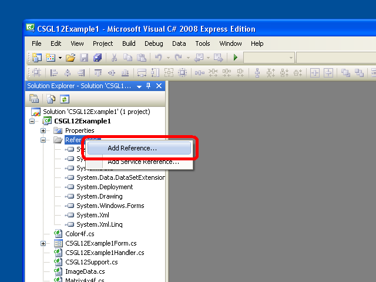
Kontekst-menyen for "References" elementet i "Solution Explorer" viser "Add Reference..." alternativet
Når du har valgt "Add Reference..." alternativet, en dialogboks som heter "Add Reference" vises. I den dialogboksen velger "Browse" kategorien, og velg DLL filer "CSGL12DLL.dll" og "CSGL12Control.dll", som vist i følgende bilde, og trykk deretter på knappen merket "OK".
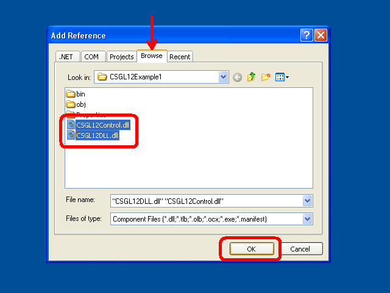
Den "Browse" kategorien i "Add Reference" dialogboksen med DLL filer "CSGL12DLL.dll" og "CSGL12Control.dll" begge valgt
Når du trykker på knappen merket "OK", den "Add Reference" dialogboks vil forsvinne, og DLL filer "CSGL12DLL.dll" og "CSGL12Control.dll" vises i "References" gren i "Solution Explorer", som vist i følgende diagram.
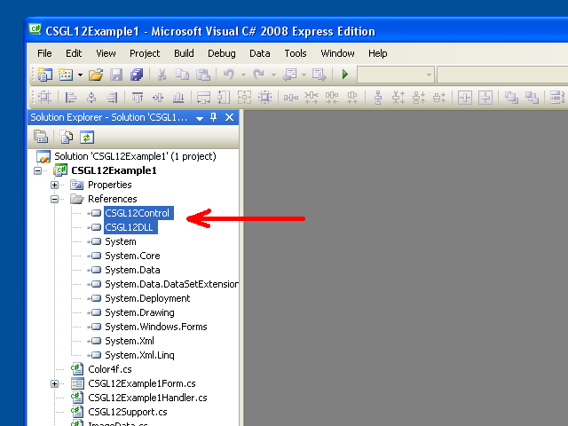
Den DLL filer "CSGL12DLL.dll" og "CSGL12Control.dll" i "References" gren i "Solution Explorer"
8.4 Legge CSGL12Control til Toolbox i Microsoft Visual C# 2008 Express Edition
Denne delen inneholder bilder av hjelp Microsoft Visual C# 2008 Express Edition å legge CSGL12Control til "Toolbox" slik at en person kan enkelt legge til forekomster av CSGL12Control en "Form" i "Designer" (Shift+F7 som standard).
I menyen velger "View" -> "Toolbox". I "Toolbox", gå til den delen som heter "General", som vist i følgende bilde.
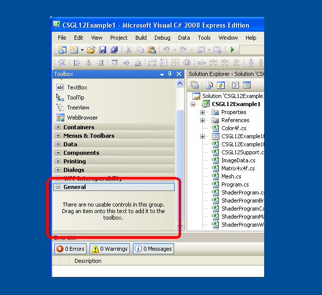
Den "General" delen av "Toolbox"
Høyreklikk hvor som helst innenfor "Toolbox". Velg alternativet "Choose Items..." i menyen som vises, som vist i følgende bilde.
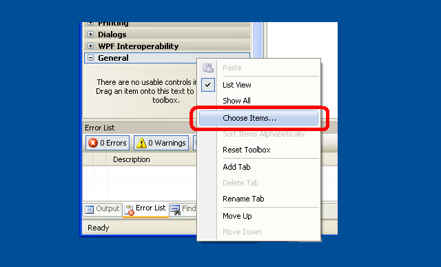
Alternativet "Choose Items..." i menyen for "Toolbox"
Alternativt kan du i menyen velger du velger "Tools" -> "Choose Toolbox Items...".
Den "Choose Toolbox Items" dialogboksen skal vises, som vist i følgende bilde.
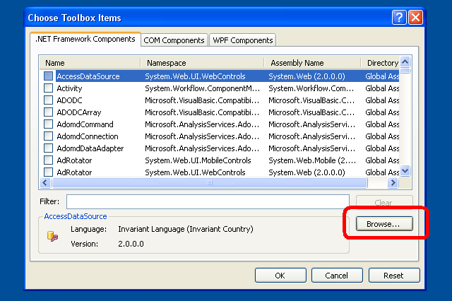
Den "Choose Toolbox Items" dialogboksen
I "Choose Toolbox Items" dialogboksen, trykk "Browse" knappen. I "Open" dialogboksen som vises, velger DLL filen "CSGL12Control.dll", som vist i følgende bilde, og trykk deretter på "OK" knappen.
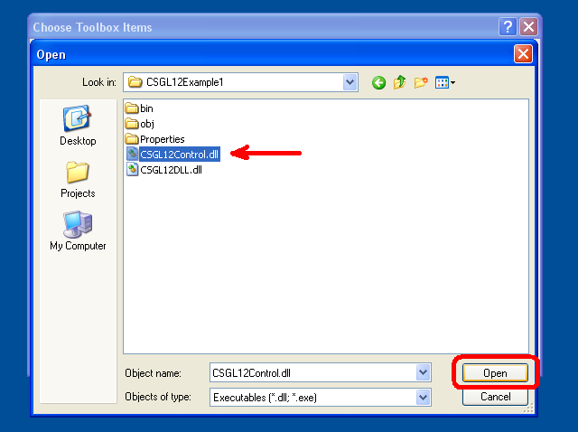
Den "Open" dialogboksen med DLL fil "CSGL12Control.dll" valgt
Den "CSGL12Control" element skal nå vises i "Choose Toolbox Items" dialogboksen som vist i følgende bilde. Trykk "OK" knappen.
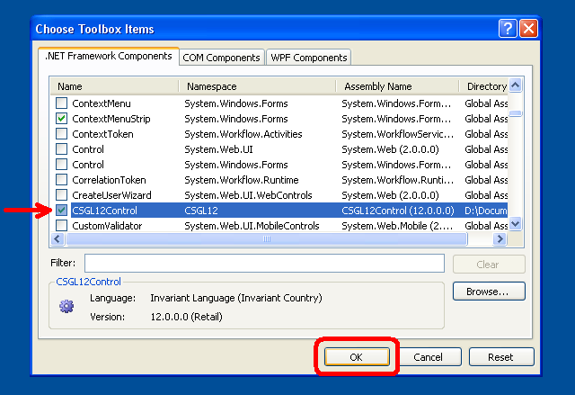
Den "CSGL12Control" elementet vises nå i "Choose Toolbox Items" dialogboksen
Den "CSGL12Control" element skal nå vises i "Toolbox", som vist i følgende bilde.
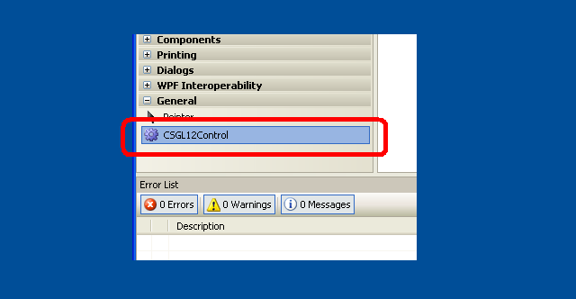
Den "CSGL12Control" elementet vises nå i "Toolbox"
8.5 Legge CSGL12Control til en "Form" ved hjelp av "Toolbox"
Denne delen inneholder bilder av hjelp Microsoft Visual C# 2008 Express Edition å legge til en forekomst av CSGL12Control en "Form" med "Toolbox".
I menyen velger "View" -> "Designer" (Shift+F7 som standard). Eller, dobbeltklikker en "Form*.cs" fil i "Solution Explorer". Eller høyreklikker en "Form*.cs" filen i "Solution Explorer" og velger "View Designer". Bruk en av de tre metodene, den "Designer" vinduet for en "Form" skal vises.
I menyen velger "View" -> "Toolbox". I "Toolbox", gå til den delen som heter "General". Et element som heter "CSGL12Control" skal vises der, som vist i følgende bilde.
Den "CSGL12Control" skal allerede være i "Toolbox"
Bruke markøren klikker elementet heter "CSGL12Control" og dra den til "Form" i "Designer". En forekomst av "CSGL12Control" skal vises på "Form" som vist i følgende bilde.
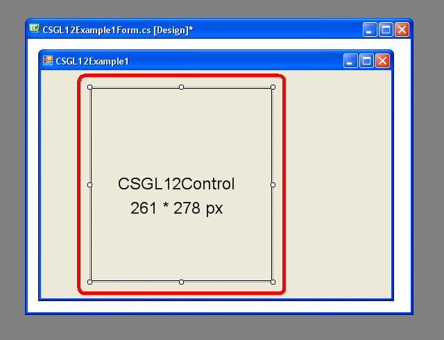
En forekomst av "CSGL12Control" på en "Form" i "Designer"
I "Form" "Designer" vise, flytte forekomst av "CSGL12Control" på "Form" og justere bredden og høyden.
Klikk på forekomst av "CSGL12Control" på "Form" å velge det. Deretter, i "Properties" panel, angi "Anchor" verdi å inkludere "Top, Bottom, Left, Right" slik at størrelsen på "CSGL12Control" vil endres i takt med endringer i programvinduet størrelse. Du kan endre variabelnavnet (dvs. verdien for "(Name)") for forekomst av "CSGL12Control" fra automatiske standard (eg, "csgL12Control") til noe som passer for din kode (f.eks "mCSGL12Control" eller "mCSGL12Control1", etc).
Dette bildet viser "Form" "Designer" utsikten og "Properties" panel.
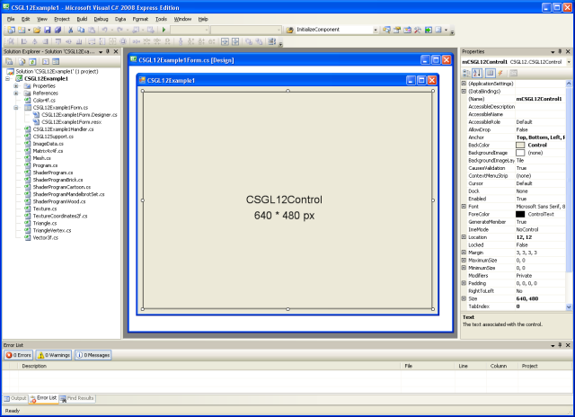
En forekomst av CSGL12Control på en Form i Designer og "Properties panel
9. Bruke to forekomster av "CSGL12Control" på en System.Windows.Forms.Form
Følgende diagram viser et eksempel på hvordan to forekomster av "CSGL12Control" kan legges til en System.Windows.Forms.Form å gjøre tegning med OpenGL i et program.
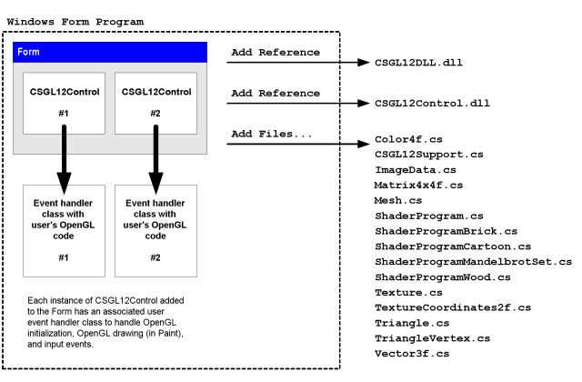
Et program med to forekomster av "CSGL12Control" på en System.Windows.Forms.Form
Følg instruksjonene i forrige avsnitt for å legge til en enkelt forekomst av "CSGL12Control" til en "Form". Deretter kan du bare dra en ny forekomst av "CSGL12Control" fra "Toolbox" til "Form" å legge til en andre "CSGL12Control".
Hver forekomst av "CSGL12Control" vil ha sin egen variabelnavn. Hver forekomst av "CSGL12Control" kan ha sine egne tilknyttede hendelseshåndterer klasse, eller den kan bruke ulike forekomster av en enkelt handler class type.
Studer eksempel prosjektet "CSGL12Example2" å lære hvordan to forekomster "CSGL12Control" kan ha sine hendelser sendt til to ulike forekomster av tilpassede hendelseshåndterer klasser med forskjellige OpenGL tegning funksjoner.
Eksempelet programmet "CSGL12Example2" har hver forekomst av "CSGL12Control" i en "SplitContainer" "Control", bare for å demonstrere en måte som forekomst av "CSGL12Control" kan brukes. Men forekomster av "CSGL12Control" kan i stedet bli satt direkte på "Form".
10. Eksempel C# kode for en "Form" med en forekomst av CSGL12Control
Følgende er den komplette C# kode i filen "CSGL12Example1Form.cs", som er en del av eksempel programmet "CSGL12Example1".
Denne koden er presentert her som et eksempel på hvordan en forekomst av CSGL12Control kan opprettes og brukes av en "Form".
using System;
using System.Collections.Generic;
using System.ComponentModel;
using System.Data;
using System.Drawing;
using System.Linq;
using System.Text;
using System.Windows.Forms;
using CSGL12;
namespace CSGL12Example1
{
public partial class CSGL12Example1Form : Form
{
public CSGL12Example1Handler mCSGL12Example1Handler;
private System.Windows.Forms.Timer mTimer;
public CSGL12Example1Form()
{
InitializeComponent();
mCSGL12Example1Handler = new CSGL12Example1Handler();
mCSGL12Control1.OpenGLStarted += new CSGL12Control.DelegateOpenGLStarted( mCSGL12Example1Handler.OpenGLStarted );
mCSGL12Control1.KeyDown += new KeyEventHandler(mCSGL12Example1Handler.KeyDown);
mCSGL12Control1.KeyUp += new KeyEventHandler(mCSGL12Example1Handler.KeyUp);
mCSGL12Control1.MouseDown += new MouseEventHandler(mCSGL12Example1Handler.MouseDown);
mCSGL12Control1.MouseUp += new MouseEventHandler(mCSGL12Example1Handler.MouseUp);
mCSGL12Control1.MouseMove += new MouseEventHandler(mCSGL12Example1Handler.MouseMove);
mCSGL12Control1.MouseWheel += new MouseEventHandler(mCSGL12Example1Handler.MouseWheel);
mCSGL12Control1.Paint += new PaintEventHandler(mCSGL12Example1Handler.Paint);
// Use a timer to trigger drawing at the desired frame rate.
//
// Windows timers are not very precise. Also, if we call wglSwapIntervalEXT(1)
// and we specify in the global OpenGL control panel that OpenGL drawing
// should wait for vertical sync (vsync) of the display, then the frame
// rate would be limited to 60 frames/second or 75 frames/second, for example,
// and our program would have to draw each frame in less than 1/60 seconds
// (16.6 milliseconds) or less than 1/75 seconds (13.3 milliseconds),
// otherwise the drawn frame would be forced to wait one or more full
// frame durations before appearing on the screen. Therefore, it would
// be best to have the timer interval somewhat shorter than a full frame
// interval, to ensure that even if there is a slight delay in responding
// to the timer event we will have at least one timer event per display
// frame interval.
//
// Theoretically, a timer interval of 16 milliseconds would be short enough
// to sustain a frame rate of 62.5 frames/second, and would seemingly have
// a corresponding rate sufficient to sustain 60 frames/second in the case
// of a vertical-sync limited drawing rate for OpenGL. However, in simple
// experiments on a system with a 2.5 GHz Core 2 Duo CPU with an nVidia
// GeForce 8600M GS with 512 MB, I found that a 16-millisecond Windows
// timer interval results in a 33 frames/second OpenGL frame rate (where
// vertical-sync locking is enabled, and the display refresh rate is
// 60 frames/second). So, despite theoretically being slightly more rapid
// than necessary to maintain a 60 frames/second drawing rate, a Windows
// timer with an interval of 16-milliseconds isn't quite rapid enough to
// ensure drawing soon enough to be ready for each display refresh; hence
// the rather significantly lower than desired frame rate of 33 frames/second.
//
// Here are the OpenGL drawing frame rates (limited to 60 Hz vertical sync)
// I observed on a particular computer for particular Windows timer intervals:
//
// 18-millisecond timer interval --> 31 frames/second OpenGL drawing
// 17-millisecond timer interval --> 31 frames/second OpenGL drawing
// 16-millisecond timer interval --> 33 frames/second OpenGL drawing
// 15-millisecond timer interval --> 60 frames/second OpenGL drawing
// 14-millisecond timer interval --> 60 frames/second OpenGL drawing
//
// So, it seems like choosing a Windows timer interval only a couple of
// milliseconds shorter than the theoretical 16.6 millisecond interval
// corresponding to a 60 frames/second rate is enough for this program to
// submit each new frame in time for the next display refresh.
//
// However, computers with slower CPUs or slower GPUs might benefit from
// an even shorter Windows timer interval, to ensure that drawing will
// happen soon enough for the next display refresh.
//
// Some displays are set to refresh at 75 frames/second, which corresponds
// to a frame duration of 13.3 milliseconds. We will aim for this drawing
// rate, and we will subtract a few milliseconds from the Windows timer
// interval to ensure that we receive and process the timer event soon
// enough to submit the frame in time for the next display refresh.
// Meanwhile, we will choose the Windows timer interval such that it isn't
// absurdly short, lest future faster computers actually manage to draw
// at that wasteful rate.
//
// Choosing a Windows timer interval of 10 milliseconds seems like it will
// reliably be able to trigger OpenGL frame drawing in time to keep up with
// a 75 frames/second display (13.3 millisecond frame duration), while
// only causing the OpenGL drawing to happen at a maximum rate of
// 100 frames/second in the unlikely scenario of a very fast computer
// actually being able to draw frames at that rate (given the overhead of
// C#, etc).
mTimer = new System.Windows.Forms.Timer();
mTimer.Interval = 10; // 10-millisecond interval
mTimer.Tick += new EventHandler(PrivateTimerTickEventHandler);
mTimer.Start();
// Set focus to a control so that it can immediately accept input
mCSGL12Control1.Focus();
// Also, whenever the form becomes activated, set focus to the main
// control on the form. The following sets up an event handler for
// that purpose.
this.Activated += new EventHandler(PrivateActivatedEventHandler);
// We want to preview dialog keys (most importantly, the cursor
// keys: up, down, right, left) so we can forward such events to
// the appropriate child control.
this.KeyPreview = true;
}
void PrivateTimerTickEventHandler(object sender, EventArgs e)
{
if (false == DesignMode)
{
mCSGL12Control1.Invalidate();
}
}
private void PrivateActivatedEventHandler(object sender, EventArgs e)
{
// When this form becomes activated, after some time of not
// being active, set input focus to a GL control on the form.
if (false == mCSGL12Control1.Focused)
{
mCSGL12Control1.Focus();
}
}
// Cursor keys (up,down,left,right) need to be specially captured
// and forwarded to the control.
// CAUTION: The KeyPreview property of this Form must be set to 'true'
// for the following method to be called.
protected override bool ProcessDialogKey(Keys keyData)
{
if
(
(keyData == Keys.Up)
¦¦ (keyData == Keys.Down)
¦¦ (keyData == Keys.Left)
¦¦ (keyData == Keys.Right)
)
{
KeyEventArgs e = new KeyEventArgs(keyData);
if (true == mCSGL12Control1.Focused)
{
mCSGL12Example1Handler.KeyDown(mCSGL12Control1, e);
}
else
{
// The CSGL12Control does not have focus.
// Let's simply drop the dialog key event. The user
// may have focus on a different control.
}
return (true);
}
return base.ProcessDialogKey(keyData);
}
}
}
Legg merke til at medlem variabel "mCSGL12Example1Handler" erklært å referere til en forekomst av en class navngitt "CSGL12Example1Handler". Denne klassen vil bli beskrevet i en senere i dette dokumentet. Legg merke til at konstruktør for "CSGL12Example1Form" legger metodene på forekomsten av "CSGL12Example1Handler" til "multicast delegates" knyttet til ulike arrangementer generert av en forekomst av "CSGL12Control". Dette betyr at når forekomsten av "CSGL12Control" genererer ulike arrangementer, som vil føre til ulike metoder på forekomsten av "CSGL12Example1Handler" (dvs. "mCSGL12Example1Handler") skal startes.
Legg merke til at medlem variabel "mTimer" erklært å referere til en forekomst av en class navngitt "System.Windows.Forms.Timer". Dette objektet er brukt til å påkalle en funksjon kalt "PrivateTimerTickEventHandler" hver 10 millisekunder. Funksjonen heter "PrivateTimerTickEventHandler" kaller en metode på forekomsten av "CSGL12Control" (dvs. "mCSGL12Control1") som fører til at "Control" å trekke seg. Dette er hvordan en forekomst av "CSGL12Control" kan animert på en omtrentlig hastighet.
Bare en del av definisjonen av "class CSGL12Example1Form" vises i C# fil kalt "CSGL12Example1Form.cs". En annen del av definisjonen av "class CSGL12Example1Form" vises i C# fil kalt "CSGL12Example1Form.Designer.cs". Selv om filer med navn som samsvarer med mønsteret "*.Designer.cs" generelt er opprettet og endret bare det grafiske "Form Designer" vindu i en C# redaktør, er det også mulig å opprette og endre slike C#-filer ved hjelp av et tekstbehandlingsprogram.
Følgende er den komplette C# kode i filen "CSGL12Example1Form.Designer.cs", som er en del av eksempel programmet "CSGL12Example1".
namespace CSGL12Example1
{
partial class CSGL12Example1Form
{
/// <summary>
/// Required designer variable.
/// </summary>
private System.ComponentModel.IContainer components = null;
/// <summary>
/// Clean up any resources being used.
/// </summary>
/// <param name="disposing">true if managed resources should be disposed; otherwise, false.</param>
protected override void Dispose(bool disposing)
{
if (disposing && (components != null))
{
components.Dispose();
}
base.Dispose(disposing);
}
#region Windows Form Designer generated code
/// <summary>
/// Required method for Designer support - do not modify
/// the contents of this method with the code editor.
/// </summary>
private void InitializeComponent()
{
this.mCSGL12Control1 = new CSGL12.CSGL12Control();
this.SuspendLayout();
//
// mCSGL12Control1
//
this.mCSGL12Control1.Anchor = ((System.Windows.Forms.AnchorStyles)
((((System.Windows.Forms.AnchorStyles.Top
¦ System.Windows.Forms.AnchorStyles.Bottom)
¦ System.Windows.Forms.AnchorStyles.Left)
¦ System.Windows.Forms.AnchorStyles.Right)));
this.mCSGL12Control1.BackColor = System.Drawing.SystemColors.Control;
this.mCSGL12Control1.Location = new System.Drawing.Point(12, 12);
this.mCSGL12Control1.Name = "mCSGL12Control1";
this.mCSGL12Control1.Size = new System.Drawing.Size(640, 480);
this.mCSGL12Control1.TabIndex = 0;
this.mCSGL12Control1.Text = "CSGL12Control1";
//
// CSGL12Example1Form
//
this.AutoScaleDimensions = new System.Drawing.SizeF(6F, 13F);
this.AutoScaleMode = System.Windows.Forms.AutoScaleMode.Font;
this.ClientSize = new System.Drawing.Size(664, 504);
this.Controls.Add(this.mCSGL12Control1);
this.Name = "CSGL12Example1Form";
this.Text = "CSGL12Example1";
this.ResumeLayout(false);
}
#endregion
private CSGL12.CSGL12Control mCSGL12Control1;
}
}
Legg merke til at dette C# koden inneholder erklæring på variabelen "mCSGL12Control1", som refererer til en forekomst av "class CSGL12.CSGL12Control" (dvs. "class CSGL12Control" i "namespace CSGL12"). Dette tilfellet er opprettet og konfigurert i funksjon "InitializeComponent".
11. Håndtering av hendelser påkalles av en forekomst av CSGL12Control
Forrige avsnitt viste C# koden for en "Form" som inneholder en enkelt forekomst av "CSGL12Control". Den C# koden legge metoder i en "class" navngitt "CSGL12Example1Handler" som hendelsen handlers for ulike arrangementer generert av forekomst av "CSGL12Control".
Her er en liste over interessante hendelser av "CSGL12Control" og "delegate" typer forbundet med disse hendelser:
OpenGLStarted CSGL12Control.DelegateOpenGLStarted
KeyDown System.Windows.Forms.KeyEventHandler
KeyUp System.Windows.Forms.KeyEventHandler
MouseDown System.Windows.Forms.MouseEventHandler
MouseUp System.Windows.Forms.MouseEventHandler
MouseMove System.Windows.Forms.MouseEventHandler
MouseWheel System.Windows.Forms.MouseEventHandler
Paint System.Windows.Forms.PaintEventHandler
Bare "OpenGLStarted" hendelse er en hendelse type spesifikke for "CSGL12Control".
Alle andre hendelser er standard System.Windows.Forms hendelser, der hendelsen behandlingsprogrammer må ha visse parametre (angitt i noen Forms dokumentasjon).
Den "OpenGLStarted" og "Paint" hendelser er de viktigste hendelser for OpenGL tegning.
Den "OpenGLStarted" hendelsen startes før den aller første "Paint" hendelsen startes.
Derfor er "OpenGLStarted" hendelseshåndterer må bli lagt til kontroll før kontrollen har en mulighet til å prøve å male selv, ellers engangshendelse vil ikke bli mottatt.
Denne hendelsen er bare et hjelpemiddel, og kan ignoreres.
Imidlertid legge til et behandlingsprogram for denne hendelsen gjør det mulig for behandleren koden for å gjøre noen en-gang initialisering som avhenger OpenGL være klar til bruk.
(OpenGL kan ikke brukes til vinduet finnes, og vinduet er klar til å utføre sin første maling.
Så, "OpenGLStarted" hendelsen deler av programmerer fra risikoen for å forsøke å bruke OpenGL altfor kort tid etter at programmet starter.
) Det er ganske enkelt å legge til logikken i et "Paint" handler om å gjøre en engangs initialisering, bruker OpenGL kontekst av "CSGL12Control".
Den "OpenGLStarted" hendelsen er tilbudt som en bekvemmelighet.
Følgende er den komplette C# kode i filen "CSGL12Example1Handler.cs", som er en del av eksempel programmet "CSGL12Example1".
Denne koden er presentert her som et eksempel på hvordan hendelsene som genereres av en forekomst av "CSGL12Control" kan håndteres å trekke bruker OpenGL.
using System;
using System.Collections.Generic;
using System.Text;
using System.IO;
using System.Windows.Forms;
using System.Drawing;
using System.Drawing.Imaging;
// This program requires "references" to the following:
//
// CSGL12DLL.dll (defines CSGL12.GL)
// CSGL12Control.dll (defines CSGL12.CSGL12Control)
using CSGL12;
namespace CSGL12Example1
{
public class CSGL12Example1Handler
{
private Mesh mMesh;
private ShaderProgram mShaderProgram1;
private ShaderProgram mShaderProgram2;
private ShaderProgram mShaderProgram3;
private ShaderProgram mShaderProgram4;
private ShaderProgram mShaderProgramSelected;
private Bitmap mHUDBitmap;
private Texture mHUDTexture;
private Font mFont1;
private Font mFont2;
private Font mFont3;
private Font mFont4;
private Pen mPen1;
private Brush mBrush1;
private double mViewDistance = 800.0;
private double mViewAzimuthDegrees = 0.0;
private double mViewAltitudeDegrees = 0.0;
private double mViewAzimuthDegreesVelocity = 9.0;
private double mViewAltitudeDegreesVelocity = 5.0;
private Point mMouseClientPositionStart;
private double mViewAzimuthDegreesStart = 0.0;
private double mViewAltitudeDegreesStart = 0.0;
public CSGL12Example1Handler()
{
mMesh = new Mesh();
mShaderProgram1 = new ShaderProgramMandelbrotSet();
mShaderProgram2 = new ShaderProgramWood();
mShaderProgram3 = new ShaderProgramBrick();
mShaderProgram4 = new ShaderProgramCartoon();
mShaderProgramSelected = mShaderProgram1;
mHUDBitmap = new Bitmap(512, 512, System.Drawing.Imaging.PixelFormat.Format32bppArgb);
mHUDTexture = new Texture();
mFont1 = new Font("Verdana", 36.0f);
mFont2 = new Font("Verdana", 24.0f);
mFont3 = new Font("Courier New", 16.0f);
mFont4 = new Font("Courier New", 10.0f);
mPen1 = new Pen(Color.Red, 3.0f);
mBrush1 = new SolidBrush(Color.FromArgb(64, 128, 128, 140));
}
public void OpenGLStarted( CSGL12Control csgl12Control )
{
GL gl = csgl12Control.GetGL();
if (null == gl) { return; }
// Load shaders and set variables
if (true == gl.bglCreateProgramObjectARB)
{
if (null != mShaderProgram1)
{
mShaderProgram1.ShaderProgramCreate(gl);
}
if (null != mShaderProgram2)
{
mShaderProgram2.ShaderProgramCreate(gl);
}
if (null != mShaderProgram3)
{
mShaderProgram3.ShaderProgramCreate(gl);
}
if (null != mShaderProgram4)
{
mShaderProgram4.ShaderProgramCreate(gl);
}
}
// Create cube mesh
mMesh = new Mesh();
mMesh.BuildCube(400.0f);
// Create a texture
mHUDTexture.CreateTextureFromBitmap(gl, mHUDBitmap, true);
// To prevent "tearing" (irregular streaks) due to swapping buffers at
// arbitrary times relative to the vsync times, we indicate that we wish
// to wait for vsync before swapping buffers.
// This request applies when the display driver control panel -- in the
// OpenGL settings area -- is set to let the application decide whether or
// not to wait for vsync. Otherwise, the driver control panel overrides
// any request made here.
if (true == gl.bwglSwapIntervalEXT)
{
gl.wglSwapIntervalEXT(1);
}
}
public void Paint(object sender, PaintEventArgs e)
{
if (null == sender) { return; }
if (false == (sender is CSGL12Control)) { return; }
CSGL12Control csgl12Control = (sender as CSGL12Control);
GL gl = csgl12Control.GetGL();
int clientWidth = csgl12Control.ClientRectangle.Width;
int clientHeight = csgl12Control.ClientRectangle.Height;
if (clientWidth <= 0)
{
clientWidth = 1;
}
if (clientHeight <= 0)
{
clientHeight = 1;
}
// Set the viewport
gl.glViewport(0, 0, clientWidth, clientHeight);
// Clear the viewport
gl.glClearColor(1.0f, 1.0f, 1.0f, 1.0f);
gl.glClear(GL.GL_COLOR_BUFFER_BIT ¦ GL.GL_DEPTH_BUFFER_BIT);
// Basic drawing conditions
gl.glEnable(GL.GL_DEPTH_TEST);
gl.glDepthFunc(GL.GL_LEQUAL);
gl.glEnable(GL.GL_CULL_FACE);
gl.glCullFace(GL.GL_BACK);
gl.glFrontFace(GL.GL_CCW);
// PROJECTION matrix, typically for perspective correction or orthographic projection
gl.glMatrixMode(GL.GL_PROJECTION);
gl.glLoadIdentity();
double aspectRatio = 1.0;
if (0 != clientHeight)
{
aspectRatio = ((double)(clientWidth) / (double)(clientHeight));
}
double verticalFieldOfViewAngle = 60.0;
gl.gluPerspective
(
verticalFieldOfViewAngle, // Field of view angle (Y angle; degrees)
aspectRatio, // width/height
0.1, // distance to near clipping plane
64000.0 // distance to far clipping plane
);
// MODELVIEW matrix, typically used to transform individual models
gl.glMatrixMode(GL.GL_MODELVIEW);
gl.glLoadIdentity();
// Preserve current matrix for the active matrix stack (in this case the MODELVIEW matrix)
gl.glPushMatrix();
if (mViewAltitudeDegreesVelocity != 0.0)
{
if (mViewAltitudeDegrees > 70.0)
{
mViewAltitudeDegrees = 70.0;
mViewAltitudeDegreesVelocity *= -1.0;
}
else if (mViewAltitudeDegrees < -70.0)
{
mViewAltitudeDegrees = -70.0;
mViewAltitudeDegreesVelocity *= -1.0;
}
mViewAzimuthDegrees += mViewAzimuthDegreesVelocity * csgl12Control.GetPreviousFrameDurationSeconds();
mViewAltitudeDegrees += mViewAltitudeDegreesVelocity * csgl12Control.GetPreviousFrameDurationSeconds();
}
Vector3f from =
new Vector3f
(
(float)(mViewDistance * Math.Cos(mViewAltitudeDegrees * (Math.PI / 180.0)) * Math.Sin(mViewAzimuthDegrees * (Math.PI / 180.0))),
(float)(mViewDistance * Math.Sin(mViewAltitudeDegrees * (Math.PI / 180.0))),
(float)(mViewDistance * Math.Cos(mViewAltitudeDegrees * (Math.PI / 180.0)) * Math.Cos(mViewAzimuthDegrees * (Math.PI / 180.0)))
);
Vector3f to = new Vector3f(0.0f, 0.0f, 0.0f);
Vector3f up = new Vector3f(0.0f, 1.0f, 0.0f);
Matrix4x4f camera = Matrix4x4f.LookAt(from, to, up);
float[] matrix = new float[16];
matrix[0] = camera.m11;
matrix[1] = camera.m21;
matrix[2] = camera.m31;
matrix[3] = 0.0f;
matrix[4] = camera.m12;
matrix[5] = camera.m22;
matrix[6] = camera.m32;
matrix[7] = 0.0f;
matrix[8] = camera.m13;
matrix[9] = camera.m23;
matrix[10] = camera.m33;
matrix[11] = 0.0f;
matrix[12] = camera.m14;
matrix[13] = camera.m24;
matrix[14] = camera.m34;
matrix[15] = 1.0f;
gl.glMultMatrixf(matrix);
if (mShaderProgramSelected != null)
{
mShaderProgramSelected.DemonstrateModificationOfVariables(gl, csgl12Control.GetPreviousFrameStartTimeSeconds(), csgl12Control.GetPreviousFrameDurationSeconds());
mShaderProgramSelected.Select(gl);
}
// Draw model(s), using active texture or shader
mMesh.Draw(gl);
// If we used a shader, disable it now...
if (true == gl.bglUseProgramObjectARB)
{
ShaderProgram.ShaderProgram_Select(gl, 0);
}
// Restore the previously-preserved matrix for the active matrix stack (in this case the MODELVIEW matrix)
gl.glPopMatrix();
// Demonstrate drawing text to a GDI+ Bitmap and then copying to
// an OpenGL texture.
DemonstrateDrawingTextToAGDIBitmapAndCopyingToAnOpenGLTexture(csgl12Control, gl);
// Flush all the current rendering and flip the back buffer to the front.
gl.wglSwapBuffers(csgl12Control.GetHDC());
}
public void DemonstrateDrawingTextToAGDIBitmapAndCopyingToAnOpenGLTexture(CSGL12Control csgl12Control, GL gl)
{
bool updateOverlayImage = false;
// The following code only enables an update of the Bitmap
// and OpenGL texture every 64 frames, thus avoiding the
// slowdown of performing updates every single frame.
// HOWEVER, updating the Bitmap and OpenGL texture can be
// done EVERY frame with acceptable speed.
// Updates should be limited to once per frame, but the
// logic to trigger updates can be based on when the relevant
// text changes.
if ((csgl12Control.GetTotalFramesDrawn() % 64) == 0)
{
updateOverlayImage = true;
}
bool showOverlayImage = true;
if (true == updateOverlayImage)
{
using (Graphics g = Graphics.FromImage(mHUDBitmap))
{
g.Clear(Color.FromArgb(0, Color.White));
g.FillEllipse(mBrush1, new Rectangle(0, 0, 256, 256));
g.FillEllipse(mBrush1, new Rectangle(256, 256, 256, 256));
PointF center = new PointF(0.5f * (256.0f + 0.0f), 0.5f * (256.0f + 0.0f));
PointF displacement = new PointF();
double fraction = csgl12Control.GetTotalElapsedTimeSeconds() * 0.1;
displacement.X = 128.0f * (float)Math.Cos(2.0 * Math.PI * fraction);
displacement.Y = 128.0f * (float)Math.Sin(2.0 * Math.PI * fraction);
g.DrawLine(mPen1, center, new PointF(center.X + displacement.X, center.Y + displacement.Y));
PointF carat = new PointF(0.0f, 0.0f);
String text = "";
text = "C# OpenGL (CSGL)";
g.DrawString(text, mFont1, Brushes.Black, carat);
carat.Y += mFont1.GetHeight();
text = "Здравствуйте";
g.DrawString(text, mFont2, Brushes.Black, carat);
carat.Y += mFont2.GetHeight();
text = "γεια σου";
g.DrawString(text, mFont2, Brushes.Black, carat);
carat.Y += mFont2.GetHeight();
text = "مرحبا";
g.DrawString(text, mFont2, Brushes.Black, carat);
carat.Y += mFont2.GetHeight();
text = "שלום";
g.DrawString(text, mFont2, Brushes.Black, carat);
carat.Y += mFont2.GetHeight();
carat.Y += 64.0f;
text = "Shift + 0: Save BMP,PNG,JPG,GIF";
g.DrawString(text, mFont4, Brushes.Black, carat);
carat.Y += mFont4.GetHeight();
text = "1,2,3,4 : Switch shader program";
g.DrawString(text, mFont4, Brushes.Black, carat);
carat.Y += mFont4.GetHeight();
carat.Y += 12.0f;
text = "Text : GDI+ on 512*512 Bitmap.";
g.DrawString(text, mFont4, Brushes.Black, carat);
carat.Y += mFont4.GetHeight();
text = "Bitmap copied to OpenGL texture.";
g.DrawString(text, mFont4, Brushes.Black, carat);
carat.Y += mFont4.GetHeight();
text = "Texture update once per 64 frames,";
g.DrawString(text, mFont4, Brushes.Black, carat);
carat.Y += mFont4.GetHeight();
text = "but more often would be OK.";
g.DrawString(text, this.mFont4, Brushes.Black, carat);
carat.Y += this.mFont4.GetHeight();
carat.Y += 12.0f;
text = String.Format("Frame:{0}", csgl12Control.GetTotalFramesDrawn());
text += " ";
text += String.Format("Time:{0:f2}", csgl12Control.GetTotalElapsedTimeSeconds());
double previousFrameDurationSeconds =
csgl12Control.GetPreviousFrameDurationSeconds();
if (previousFrameDurationSeconds > 1.0e-10)
{
double framesPerSecondOverall =
1.0 / previousFrameDurationSeconds;
text += " ";
text += String.Format("FPS:{0:f2}", framesPerSecondOverall );
}
g.DrawString(text, mFont3, Brushes.Black, carat);
carat.Y += mFont3.GetHeight();
}
mHUDTexture.UpdateTextureWithBitmapData(gl, mHUDBitmap);
}
if (true == showOverlayImage)
{
CSGL12Support.SupportDrawTextureImageUnrotatedAndOrthographically
(
gl,
csgl12Control.ClientSize.Width,
csgl12Control.ClientSize.Height,
mHUDTexture,
0,
0, // i.e., 0 == draw TOP of image at TOP of viewport, Y-axis points DOWN
mHUDTexture.GetWidth(), // glControl.ClientSize.Width, // mHUDTexture.GetWidth(),
mHUDTexture.GetHeight() // glControl.ClientSize.Height // mHUDTexture.GetHeight()
);
}
}
public void KeyDown(object sender, KeyEventArgs e)
{
if (null == sender) { return; }
if (false == (sender is CSGL12Control)) { return; }
CSGL12Control csgl12Control = (sender as CSGL12Control);
GL gl = csgl12Control.GetGL();
if (e.KeyCode == Keys.A)
{
}
if (e.KeyCode == Keys.Z)
{
}
if (e.KeyCode == Keys.D1)
{
mShaderProgramSelected = mShaderProgram1;
}
if (e.KeyCode == Keys.D2)
{
mShaderProgramSelected = mShaderProgram2;
}
if (e.KeyCode == Keys.D3)
{
mShaderProgramSelected = mShaderProgram3;
}
if (e.KeyCode == Keys.D4)
{
mShaderProgramSelected = mShaderProgram4;
}
// NOTE: The only way for cursor key events (up,down,left,right)
// to make it to this function is for the main form to implement
// the following:
//
// protected override bool ProcessDialogKey ( Keys keyData )
//
// and explicitly invoke this KeyDown() method with the
// an appropriately formed KeyEventArgs instance.
if (e.KeyCode == Keys.Up)
{
mViewDistance -= 10.0;
}
if (e.KeyCode == Keys.Down)
{
mViewDistance += 10.0;
}
if (e.KeyCode == Keys.Left)
{
mViewAzimuthDegrees += 1.0;
}
if (e.KeyCode == Keys.Right)
{
mViewAzimuthDegrees -= 1.0;
}
// Save an image of the viewport (press Shift-0 (zero)). The following
// code writes out the viewport in the following image formats: BMP, PNG, GIF, JPG.
// If you only want a single format, comment out the other file write commands.
// BMP has no compression artifacts, but the file can be quite large.
// PNG looks good, and supports 8-bit transparancy (good for textures, etc).
// GIF looks bad unless you build the color table intelligently (there is a
// neural network color table builder for GIF, in C#/.NET, that you can
// find on the Internet; perhaps Paint.NET uses that code); but GIF files
// can be quite small, and supports animation.
// JPG looks good under most circumstances, and the file size can be quite small,
// but transparency is not supported.
// So, for pixel-perfect images, where file size is not important, BMP might be appropriate.
// For textures with transparency, PNG might be appropriate.
// For good-looking images, and small file size, and use in Web pages, JPG might be appropriate.
// For some purposes, with small file sizes, and use in Web pages, GIF might be appropriate.
if ((e.KeyCode == Keys.D0) && (e.Shift == true))
{
DateTime now = DateTime.Now;
String dateTimeString = String.Format("{0:d4}{1:d2}{2:d2}{3:d2}{4:d2}{5:d2}{6:d3}", now.Year, now.Month, now.Day, now.Hour, now.Minute, now.Second, now.Millisecond);
String frameIndexString = String.Format("{0:d6}", csgl12Control.GetTotalFramesDrawn());
String fileNameWithoutExtension = "screen" + "_" + dateTimeString + "_" + frameIndexString;
CSGL12Support.SupportWriteViewportToImageFile(gl, fileNameWithoutExtension + ".bmp", System.Drawing.Imaging.ImageFormat.Bmp);
CSGL12Support.SupportWriteViewportToImageFile(gl, fileNameWithoutExtension + ".png", System.Drawing.Imaging.ImageFormat.Png);
CSGL12Support.SupportWriteViewportToImageFile(gl, fileNameWithoutExtension + ".gif", System.Drawing.Imaging.ImageFormat.Gif);
CSGL12Support.SupportWriteViewportToImageFile(gl, fileNameWithoutExtension + ".jpg", System.Drawing.Imaging.ImageFormat.Jpeg);
}
}
public void KeyUp(object sender, KeyEventArgs e)
{
}
public void MouseDown(object sender, MouseEventArgs e)
{
if (null == sender) { return; }
if (false == (sender is CSGL12Control)) { return; }
CSGL12Control csgl12Control = (sender as CSGL12Control);
mMouseClientPositionStart = csgl12Control.PointToClient(Cursor.Position);
mViewAzimuthDegreesStart = mViewAzimuthDegrees;
mViewAltitudeDegreesStart = mViewAltitudeDegrees;
if ((e.Button & MouseButtons.Left) == MouseButtons.Left)
{
mViewAzimuthDegreesVelocity = 0.0;
mViewAltitudeDegreesVelocity = 0.0;
}
if ((e.Button & MouseButtons.Right) == MouseButtons.Right)
{
mViewAzimuthDegreesVelocity = 9.0;
mViewAltitudeDegreesVelocity = 5.0;
}
}
public void MouseUp(object sender, MouseEventArgs e)
{
if ((e.Button & MouseButtons.Right) == MouseButtons.Right)
{
}
}
public void MouseMove(object sender, MouseEventArgs e)
{
if (null == sender) { return; }
if (false == (sender is CSGL12Control)) { return; }
CSGL12Control csgl12Control = (sender as CSGL12Control);
Point mouseClientPositionCurrent = csgl12Control.PointToClient(Cursor.Position);
if ((e.Button & MouseButtons.Left) == MouseButtons.Left)
{
double azimuth =
mViewAzimuthDegreesStart
- (360.0 / (double)(csgl12Control.Width + 1))
* (double)(mouseClientPositionCurrent.X - mMouseClientPositionStart.X);
double altitude =
mViewAltitudeDegreesStart
+ (180.0 / (double)(csgl12Control.Height + 1))
* (double)(mouseClientPositionCurrent.Y - mMouseClientPositionStart.Y);
double epsilon = 0.05;
if (azimuth < (-180 + epsilon)) { azimuth = (-180 + epsilon); }
if (azimuth > (180 - epsilon)) { azimuth = (180 - epsilon); }
if (altitude < (-90 + epsilon)) { altitude = (-90 + epsilon); }
if (altitude > (90 - epsilon)) { altitude = (90 - epsilon); }
mViewAzimuthDegrees = azimuth;
mViewAltitudeDegrees = altitude;
}
}
public void MouseWheel(object sender, MouseEventArgs e)
{
mViewDistance -= 0.1 * (double)e.Delta;
}
}
}
Legg merke til at funksjonen som heter "OpenGLStarted" er brukt i dette eksempelet å opprette "pixel shader programs" og en OpenGL tekstur. For dette programmet, vi trenger bare å lage disse ressursene gang, og det er mer effektivt å lage dem kun én gang.
Legg merke til at funksjonen som heter "OpenGLStarted" koden kontrollerer om en WGL "extension" funksjon kalt "wglSwapIntervalEXT()" eksisterer, og om at funksjonen virker eksisterer koden påkaller funksjonen. Funksjonen setter en tilstand som påvirker driften av programmet for hele økten, så vi må bare ringe som fungerer når, og det er derfor vi prøver å ringe til at funksjonen i "OpenGLStarted" funksjon (som selv er bare aktiveres én gang, når OpenGL er startet for en bestemt "CSGL12Control", antar vi lagt til "OpenGLStarted" metoden til den aktuelle hendelsen delegere).
Funksjonen heter "Paint" inneholder all koden for å tegne et enkelt "bilde" av animasjonen ved hjelp OpenGL. Den "Paint" funksjon vil bli kalt kanskje 60 ganger per sekund, på grunn av at de tilhørende "CSGL12Control" forekomsten er "ugyldig" (tvunget til å trekke seg igjen) når som hastighet. (Se på "Form" kodeeksempel i forrige avsnitt til å se tidtakeren som bestemmer hastighet på "ugyldig" og selve funksjonskallet som forårsaker forekomst av "CSGL12Control" å bli "ugyldig.)"
Alle OpenGL funksjonene aktiveres ved hjelp av en forekomst av "class GL" (eksempel: gl.gl*()). Forekomsten av "class GL" er ervervet fra forekomst av "CSGL12Control", som er implisitt i første parameter på "Paint" funksjon.
Alle OpenGL konstantene kan spesifiseres ved å angi "class" navn "GL" etterfulgt av et punktum og navnet på konstant; dvs. "GL.GL_TRIANGLES".
Den OpenGL koden i dette eksemplet er ikke helt tydelig og lett å forstå, men forhåpentligvis kan du gjenkjenne hvordan koden kan endres til eget formål.
12. Checking for tilgjengeligheten av en "forlengelse" funksjon av OpenGL
Bare sjekk hvis boolsk flagg av samme navn som OpenGL funksjonen er "oppfylt" før du prøver å bruke den tilsvarende funksjonen.
Den boolske variabelen har et navn som begynner med "b" etterfulgt av OpenGL funksjon navn.
if (true == gl.bglCreateProgramObjectARB)
{
// glCreateProgramObjectARB() exists and can be invoked.
// Also, because that function is related to pixel shaders, it is very
// likely that other functions that are required for the use of pixel
// shaders also exist and can be invoked.
// . . .
}
Sjekking er bare nødvendig for "forlengelse" funksjoner.
OpenGL 1.1 funksjoner, og alle GLU funksjoner, og kjernen WGL funksjoner, ikke krever slike sjekker. Men boolsk flagg finnes, og er satt på riktig måte, for alle slike funksjoner som tilbys av "class GL", inkludert kjernen OpenGL 1.1 funksjoner. Således er det en konsistent måte å sjekke tilgjengeligheten for alle funksjonene i denne klassen.
Vite om en funksjon er en "forlengelse" er ansvaret til programmerer.
Men funksjonen navnet suffikser, for eksempel "EXT", "ARB", "MESA", "NV" (NVidia), "APPLE", osv., hjelp tilsier forlengelse.
Hvis en funksjon "gl*()" har en nabo funksjon "gl*ARB()" eller "gl*NV()," deretter funksjonen "gl*()" er trolig en forlengelse (så langt som Windows OPENGL32.DLL er opptatt).
Den eneste fordelen av å vite om en funksjon er en "forlengelse" (med hensyn til Windows OPENGL32.DLL) er i stand til å unngå å merke hvis funksjonene er tilgjengelige.
Du kan søke etter alle OpenGL funksjoner brukes i koden din, og deretter bygge opp en alfabetisk liste over de ulike funksjonene brukes.
Så, i begynnelsen av programmet, etter CSGL12Control kaller OpenGLStarted delegere, er det bare å kontrollere alle boolsk flagg for alle de funksjonene du vil bruke.
Hvis du velger å avslutte programmet hvis noen "nødvendige" funksjoner mangler, blir alle sjekker for slike funksjoner i koden kan bli eliminert.
Du kan også danne en gruppe av ikke-essensielle funksjoner i sjekk, og muligens informere brukeren av en hvilken som helst funksjon endringer, og eventuelt forlate sjekker spredt rundt i koden.
Med mer OpenGL erfaring, kan du få en følelse av hva utvidelser er relatert (eksempler: imaging, Shaders, buffere, komprimering, ...).
Derfor kan du sjekke for tilstedeværelsen av en kritisk funksjon og bruke denne informasjonen til å avgjøre om hele undergruppe er trolig å være til stede.
13. Speed
Av ulike årsaker, C# er tregere enn non-CLR C/C++.
C# omsider kompilert ned til native montering språk, akkurat som for C/C++, men på grunn av forsikringer gjort av C# språk og .NET CLR, generell hastighet programvare bygd på C# og .NET er noe tregere enn programvare bygget med non-CLR C/C++.
Derfor får den høyeste hastigheten mulig måte ved hjelp non-CLR C/C++ i stedet for C#.
Videre, fordi ringer noen native biblioteket fra C# innebærer P/Invoke, påkalle funksjoner som OpenGL funksjoner vil kreve noe tid til å utføre arbeid i P/Invoke laget.
Likevel "CSGL12" ser ut til å fungere raskt nok til å bli brukt i mange sanntid grafiske formål, som for enkle spill, 3D seere, redaktører, eller 3D-presentasjoner. Dette gjelder spesielt hvis det meste av arbeidet blir utført av GPU stedet for CPU.
14. Sammenligning mellom "CSGL12" og "Tao Framework"
Den "Tao Framework" er et stort C# / .NET bibliotek som tilbyr et grensesnitt for mange åpen kildekode biblioteker, for eksempel OpenGL, OpenAL (lyd), SDL (a gaming / simulering plattform), Open Dynamics Engine (ODE) (fysikk), etc.
Den Tao Framework er plattformer (Windows, Linux, Mac OS X).
"CSGL12" bare gir et grensesnitt til OpenGL og er bare for Windows operativsystemet.
Den Tao Framework har et fellesskap. En person kan ha nytte av å kommunisere med andre brukere av Tao Framework.
Men det kan være mange formål som "CSGL12" kan være enklere å bruke for Windows programmer.